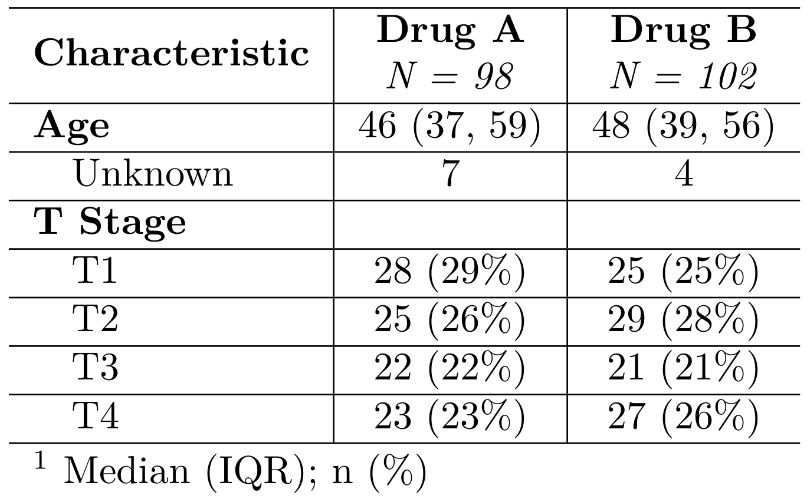

Function converts a gtsummary object to a knitr_kable + kableExtra object.
This allows the customized formatting available via knitr::kable
and kableExtra; as_kable_extra() supports arguments in knitr::kable().
as_kable_extra() output via gtsummary supports
bold and italic cells for table bodies. Users
creating pdf output should specify as_kable_extra(format = "latex").
as_kable_extra(
x,
include = everything(),
return_calls = FALSE,
strip_md_bold = TRUE,
fmt_missing = TRUE,
...
)Arguments
- x
Object created by a function from the gtsummary package (e.g. tbl_summary or tbl_regression)
- include
Commands to include in output. Input may be a vector of quoted or unquoted names. tidyselect and gtsummary select helper functions are also accepted. Default is
everything().- return_calls
Logical. Default is
FALSE. IfTRUE, the calls are returned as a list of expressions.- strip_md_bold
When TRUE, all double asterisk (markdown language for bold weight) in column labels and spanning headers are removed.
- fmt_missing
Logical argument adding the missing value formats.
- ...
Additional arguments passed to knitr::kable
Value
A kableExtra object
PDF via LaTeX Tips
This section discusses options intended for use with
output: pdf_documentin yaml of.Rmd.as_kable_extra(format = "latex")
Custom column names
In pdf output, column names do not currently inherit formatting applied in
gtsummary tables. However, custom column names can be achieved with the
col.names argument as shown in Example 2, including attributes such as bold
formatting, italic formatting, and line breaks. Doing so requires the escape = FALSE argument; however, when using escape = FALSE special latex
characters like \ and % will need to be escaped prior to entering
as_kable_extra(). Using escape = FALSE when the gtsummary table has
special LaTeX characters will result in the error "LaTeX failed to compile..."
Additional table styling
Additional styling is available through knitr::kable() and
kableExtra::kable_styling() as shown in Example 3, which implements row
striping and repeated column headers in the presence of page breaks.
Example Output
Example 1 (html)

Example 1 (pdf)

Example 2 (pdf)

Example 3 (pdf)

See also
Other gtsummary output types:
as_flex_table(),
as_gt(),
as_hux_table(),
as_kable(),
as_tibble.gtsummary()
Examples
# \donttest{
# Example 1 (general) -------------------------------------------------------
as_kable_extra_ex1_gen <-
trial %>%
select(trt, age, stage) %>%
tbl_summary(by = trt) %>%
bold_labels() %>%
as_kable_extra()
# Example 2 (PDF via LaTeX) -------------------------------------------------
custom_names <- c(
"\\textbf{Characteristic}",
"\\textbf{Drug A}\n\\textit{N = 98}",
"\\textbf{Drug B}\n\\textit{N = 102}"
)
as_kable_extra_ex2_pdf <-
trial %>%
select(trt, age, stage) %>%
tbl_summary(
by = trt,
statistic = list(all_categorical() ~ "{n} ({p}\\%)")
) %>%
bold_labels() %>%
modify_footnote(
update = all_stat_cols() ~ "Median (IQR); n (%)"
) %>%
as_kable_extra(
format = "latex",
col.names = kableExtra::linebreak(custom_names, align = "c"),
escape = FALSE
)
# Example 3 (PDF via LaTeX) -------------------------------------------------
as_kable_extra_ex3_pdf <-
trial %>%
select(trt, age, stage) %>%
tbl_summary(by = trt) %>%
bold_labels() %>%
as_kable_extra(
format = "latex",
booktabs = TRUE,
longtable = TRUE,
linesep = ""
) %>%
kableExtra::kable_styling(
position = "left",
latex_options = c("striped", "repeat_header"),
stripe_color = "gray!15"
)
# }